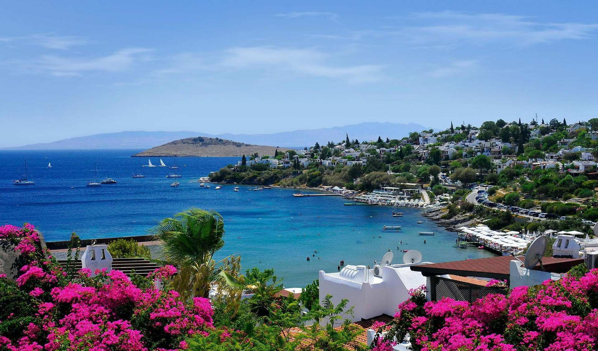

Цікаве про Турцію |
 |
| - Стамбул ─ єдине в світі місто, яке було столицею відразу 3 імперій: Римської, Візантійської та Османської. |
| - Кава була спочатку завезена з Ємену в Стамбул. І тільки потім поширилася по Європі. До Туреччини кава була завезена у XV столітті, і відразу ж набула величезної популярності. Мало хто знає, що в цьому ж столітті був введений закон, що дозволяє жінкам подавати на розлучення, якщо їхні чоловіки не могли їх забезпечити щоденною кавою! |
| - Кішки, що живуть по берегах озера Ван у Туреччині, адаптовані до води. Вони можуть перебувати в ній дуже довго, виловлюючи дрібних риб і молюсків. Ванські кішки навіть сплять в озері, зручно влаштувавшись на неглибоких місцях. |
| - За даними, розташованої в Лондоні, всесвітньої організації по туризму WTTC, на сьогодні, визначено п'ять кращих місць у світі для любителів подорожей і відпочинку: Париж (Франція), Лондон (Англія), Нью-Йорк (США), Анталія (Туреччина), Сінгапур. |
| - Туреччина — країна, де вперше у світі суддею Верховного Суду стала жінка. |
| - Середземне море одне з найчистіших морів у світі, на противагу Чорному морю. |
| - Найвищою горою Туреччини вважається гора Арарат, висота якої сягає 5166 м. Згідно з легендою гора Арарат є місцем, де зупинився Ноїв ковчег. |
| - Туреччина — найбільший постачальник текстилю на європейський ринок. |
| - Дві третини турецького населення молодші 35 років. |
| - Перепис населення не проводиться в Туреччині за національним складом, тому оцінки чисельності національностей приблизні. Передбачається, що в Туреччині проживає понад 20 млн. Курдів, від 1 до 2 млн. Кавказьких народів, 0,5 млн арабів, близько 40 тис. Вірмен і близько 70 тис. Євреїв. |
| - Валюту в Туреччині легко поміняти, розплатившись за будь-яку дрібницю у великих супермаркетах. Решту дадуть по курсу або такому ж, або більш вигідному, ніж в обмінних пунктах. |
| - Океанаріум, відкритий у 2009-му році в Стамбулі, — найбільший в Європі. |
| - У Туреччині понад десять гірськолижних курортів. |
| - У Туреччині релігія законодавчо відокремлена від держави. Всі церкви мають рівноправний статус. На території країни розташовано 78 000 мечетей, 320 різних християнських громад і 39 синагог. |
| - Туреччина посідає перше місце у світі за кількістю пам'ятників архітектури та історії. На території Туреччини 33 400 археологічних пам'ятників і 440 000 історико-археологічних об'єктів. |
| - Практично всі чоловіки в Туреччині курять. Напевно, саме тому на кожному кроці можна побачити напис «Не палити». Але якщо такої таблички немає, навіть не сумнівайтеся - там будуть стояти чоловіки, які палять. |
| - Практично ніде в турецьких магазинах немає камер схову. Купили продукти на східному базарі, прийшли в супермаркет з сумками? Сміливо заходьте - ніхто й слова не скаже. До речі, охоронців в супермаркетах теж можна зустріти нечасто. |
| - В турецькому місті Стамбул Агата Крісті написала знаменитий роман «Вбивство у Східному експресі». Тепер в готелі Пера Пелес знаходиться невеликий музей. |
| - Країна займає перше місце в світі за виробництвом фініків. |
| - Скрізь, де є можливість, турки намагаються ховати електричні дроти під землю. Тому у них так гарно, зайві речі не псують пейзаж. Втім, конвеєрні відключення струму в Туреччині - не така вже й рідкість. Місцеві до них вже звикли, а от туристи - поки що ні. |
| 
|